We structured our experiment around three distinct tasks that represent different ways LLMs are used in legal work. For each task, we used both Grok (auto mode) and Gemini (thinking mode) with identical prompts, then compared their outputs and assessed their usefulness for both legal professionals and the general public.
Case Summarisation
In task 1, we tested two AI models, Grok (auto) and Gemini (thinking). We want to test whether AI can perform accurately when doing case summarization. We found a case from HKLII and sent the whole case, including key facts, conclusion, etc., to AI to see whether it can summarize the case for someone who does not have legal knowledge, and provide all the information accurately.
We found that both AI can perform accurately, and they can list out all the key facts by using some simple words for the user to understand. Moreover, they can find out the legal issue and the result of the case. Overall, Gemini can organize better than Grok, but Grok can provide more detailed key facts. Since people are more focused on the case, the more key facts included, the better for them to understand. Although some key facts that Grok provided may not be useful, sometimes those that are not useful may show some intention of the plaintiff or defendant, so Grok is performing better.
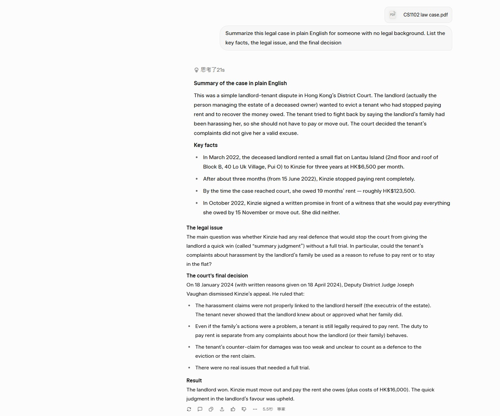
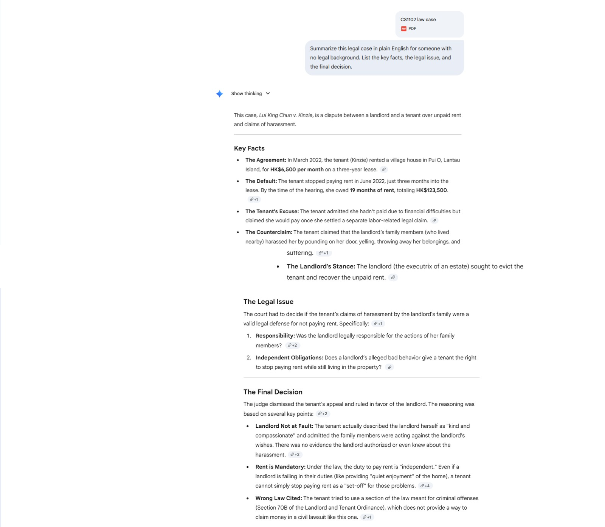
Grok performs better than Gemini because it includes the original case key fact. The Gemini AI missed some key facts from the original case. Although those key facts are not important, it is still useful for the audience to know more background of the case. Therefore, Grok is more suitable for someone who does not have any legal knowledge or someone who wants to know all the key facts instead of just focusing on important facts. Both of the AIs provide a correct legal issue and final decision of the court. They did not miss any information.
Document Drafting
For Task 2, we tested whether Grok and Gemini could draft a realistic Hong Kong room rental agreement from scratch. We gave both models the same scenario: a landlord named Mr Chan renting a room to a tenant named Sarah at HK$8,000 per month with a two month deposit and basic house rules. We then asked Gemini to review Grok's agreement and identify any missing or legally risky clauses. This allowed us to test not just drafting ability but also whether AI can critically evaluate another AI's legal output.
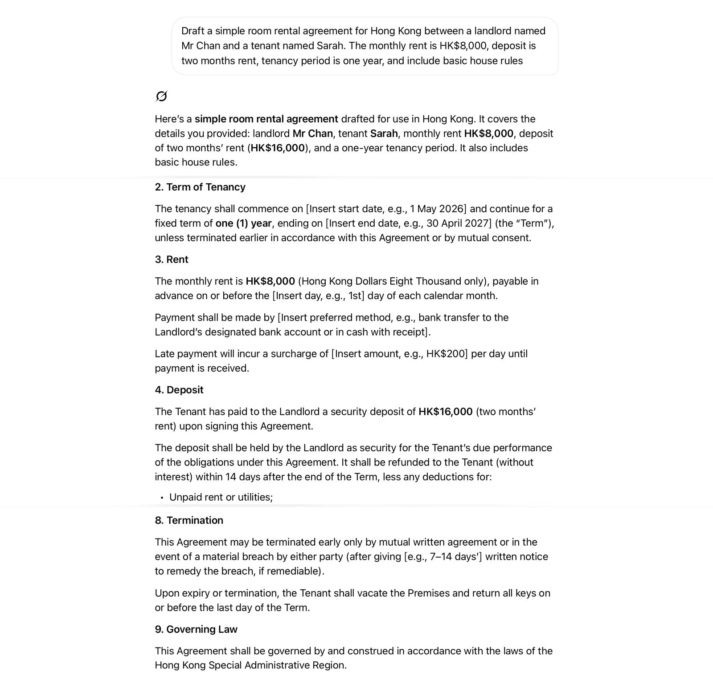
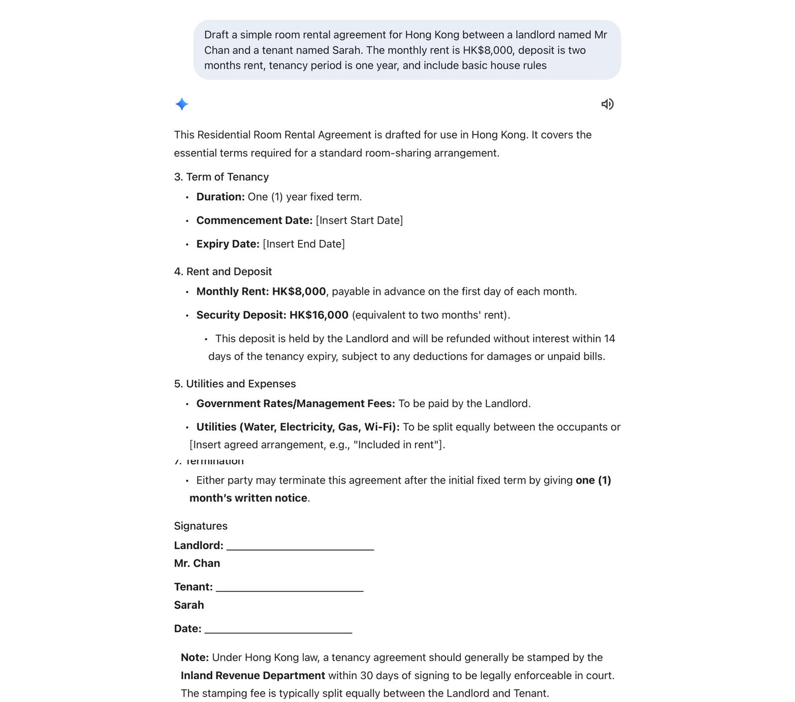
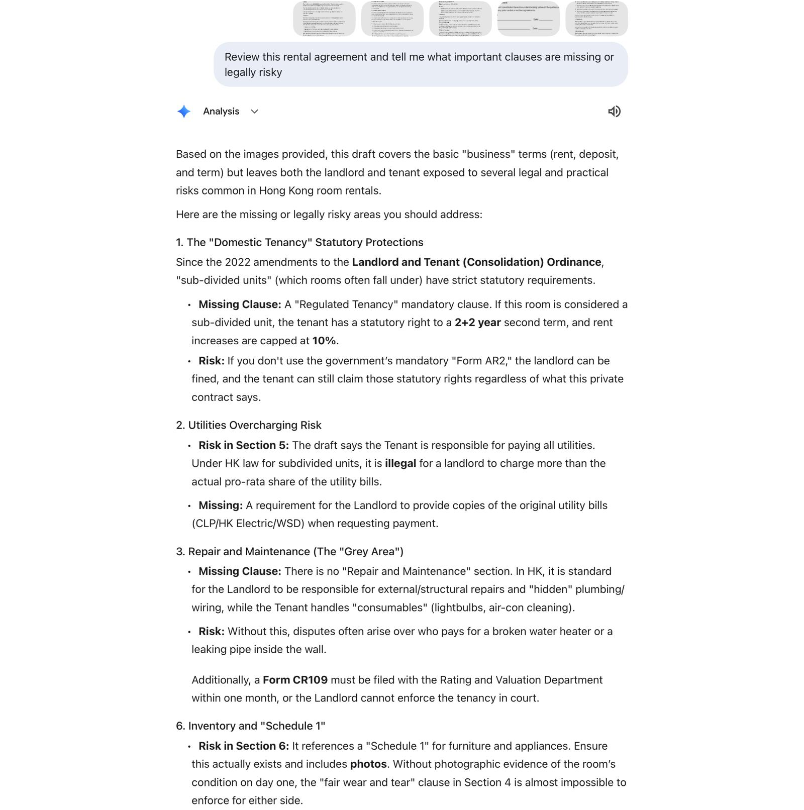
Firstly, in terms of tenancy and termination rights. In Hong Kong, the market standard is actually a 1-year fixed + 1-year optional term. However, Grok's version is a pure one-year "hard term". This means that even if the tenant wants to move out after living there for 11 months, they may still be responsible for the remaining month's rent, while Gemini's version is more flexible, allowing either party to terminate after one year by giving one month's notice.
Secondly, considering the security deposit clause. While Hong Kong law does not impose a statutory cap on security deposits for general private tenancies, market practice almost universally dictates a deposit of two months' rent. Grok specifies that the deposit shall be refunded within 14 days after deductions. Gemini does not specify the number of days. While the law suggests "as soon as reasonably practicable," specifying a clear number of days helps avoid disputes later.
Lastly, on the issue of subletting, although common law allows it by default when a contract is silent, most landlords expect a strict prohibition to be included. Grok prohibits subletting, closing this loophole. Gemini does not mention subletting at all. This means that, legally, the tenant has the right to sublet without your consent, which is a significant risk in a shared-living scenario.
No single agreement is definitively safer. Grok's version is safer for the landlord, as it contains express prohibitions on subletting, clear rules, and rights of access. However, its "late fee" clause is legally vulnerable. Gemini's version is safer for the tenant, offering a clearer path to terminate the lease after one year and reminding the landlord of the legal necessity of stamping. Nevertheless, its silence on subletting and access rights creates dangerous legal loopholes for the property owner.
Legal Information Retrieval
For Task 3, we tested two AI models, Grok and Gemini, by asking them the same three Hong Kong legal questions and comparing their answers against official sources from the Rating and Valuation Department and the Community Legal Information Centre to see which model was more accurate and useful for both legal professionals and the general public. We selected three questions that are commonly relevant to everyday life in Hong Kong: the minimum notice period a landlord must give a tenant to vacate, whether a verbal contract is legally binding, and the time limit to file a claim in the Small Claims Tribunal. We chose these three questions because they represent some of the most common legal situations that Hong Kong residents face in everyday life, according to the Hong Kong Department of Justice's Tel-Law Scheme, which makes them a good way to test whether AI can be genuinely helpful in practical legal scenarios.
Overall, both models were accurate across all three questions, but they differed significantly in how they presented the information. Gemini gave more organised responses with clear structure and summary tables that were easy to follow, while Grok provided very detailed answers that felt more like a search engine compiling information from multiple sources, which meant the answers were thorough but required more effort to read and understand.
We found that while both AI models can be a useful starting point for getting a basic understanding of a legal topic, their responses often contained legal terminology such as "cause of action", "periodic tenancy" and ordinance references like "Cap. 347" without explanation, which would be difficult for someone with no legal background to fully understand. For legal professionals, both tools could serve as a quick reference when they already know the answer but need a fast fact check. However, we noticed that both AIs cited their sources in small tags that most users would likely miss, and since LLMs use parametric memory rather than recalling verified facts, there is always a risk of confabulation where the AI produces a confident but inaccurate answer that general users would have no way to detect.
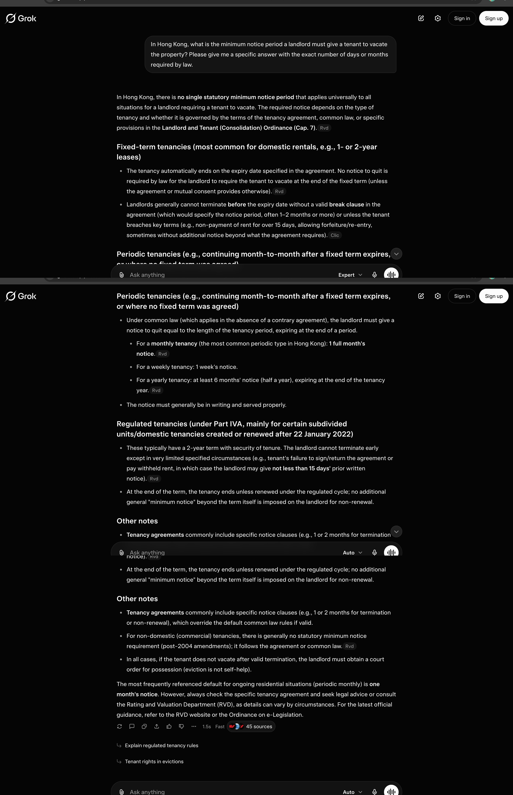
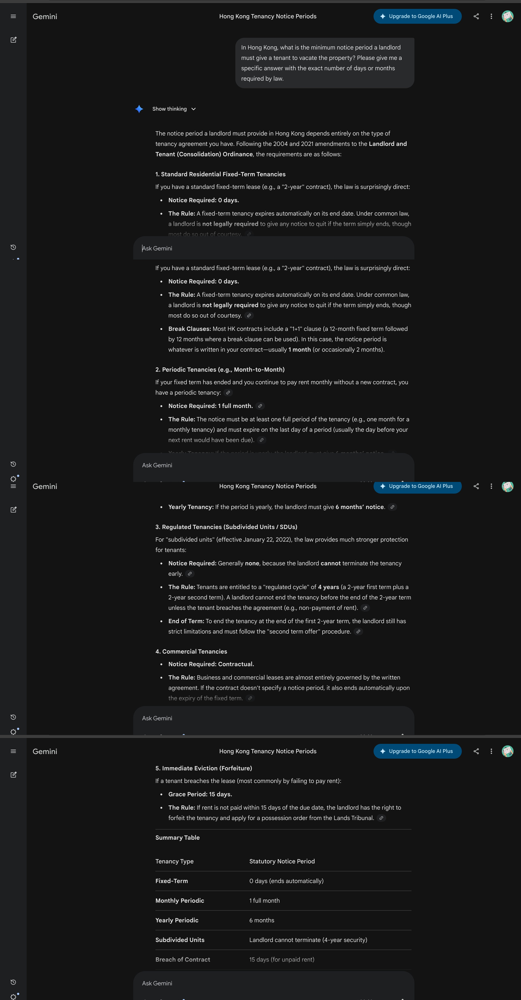
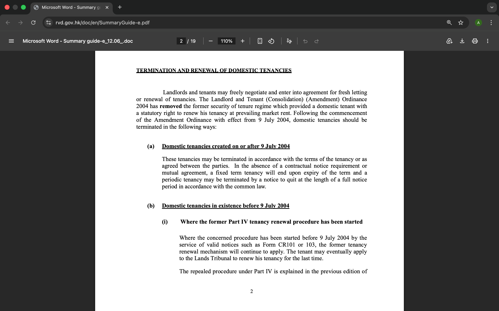
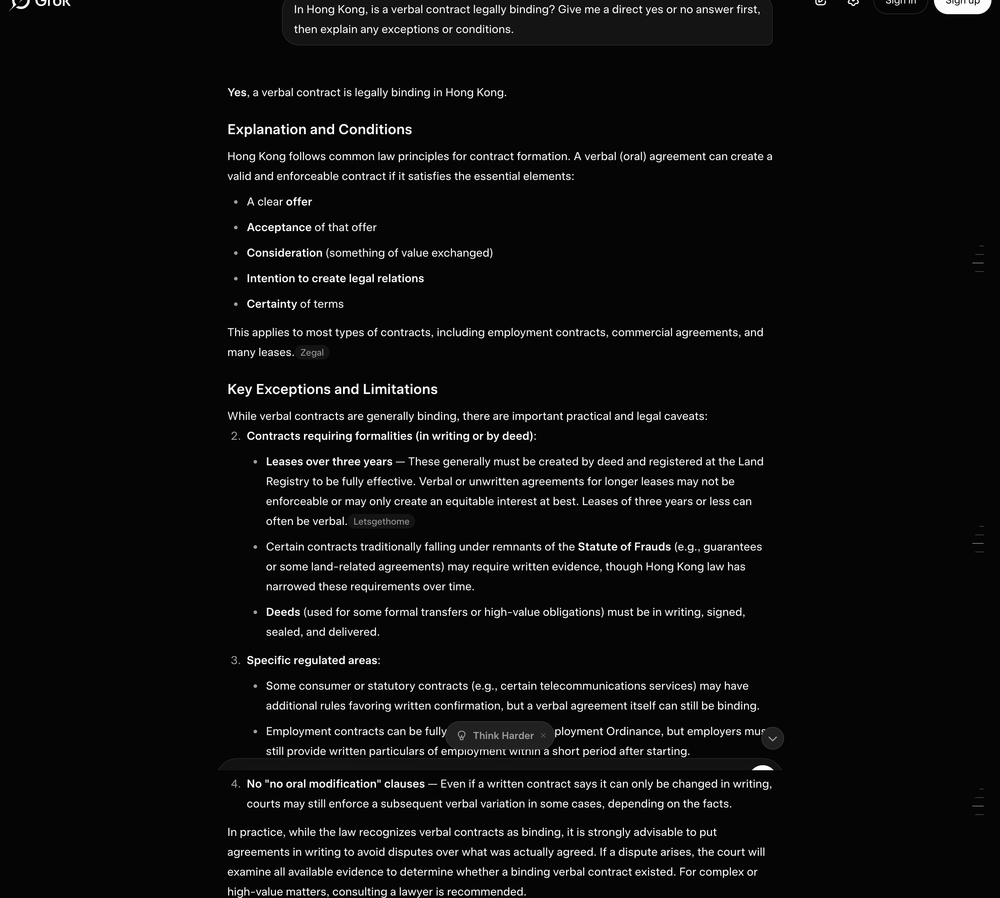
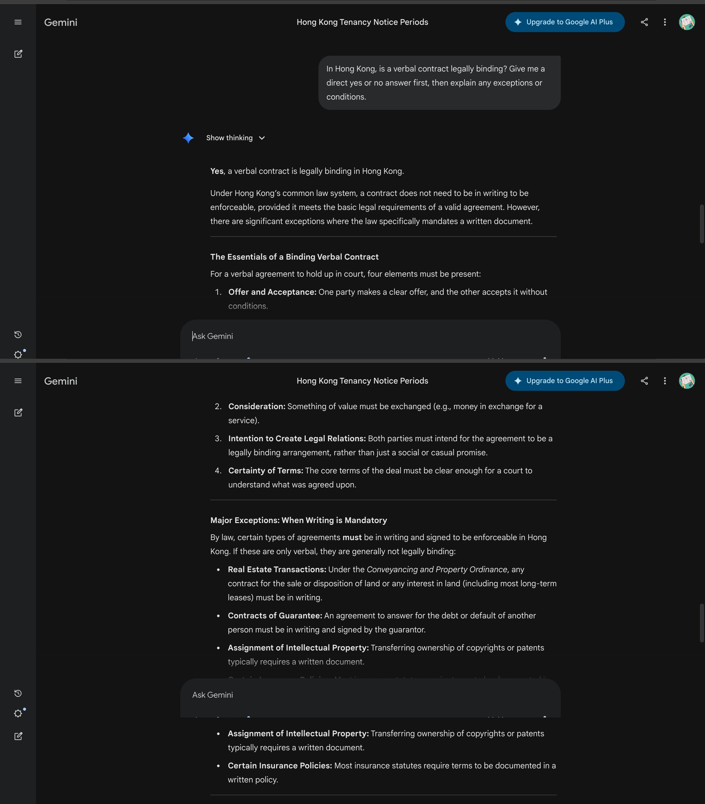
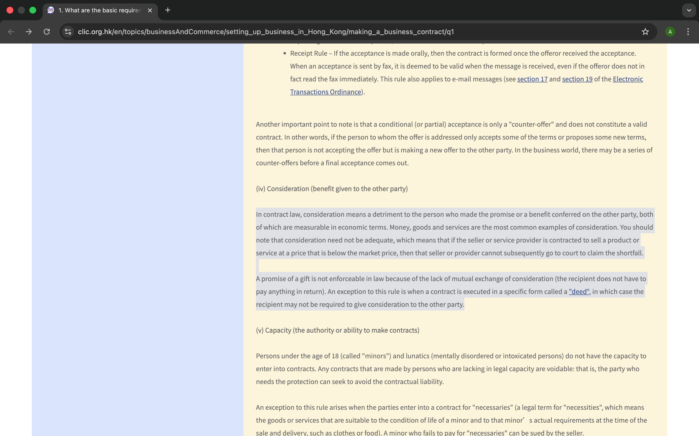
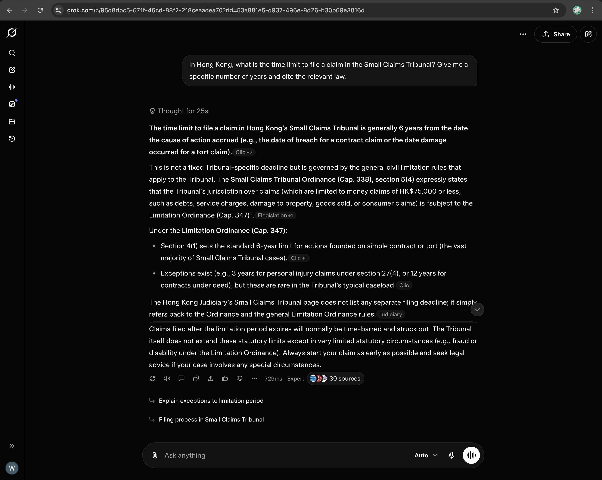
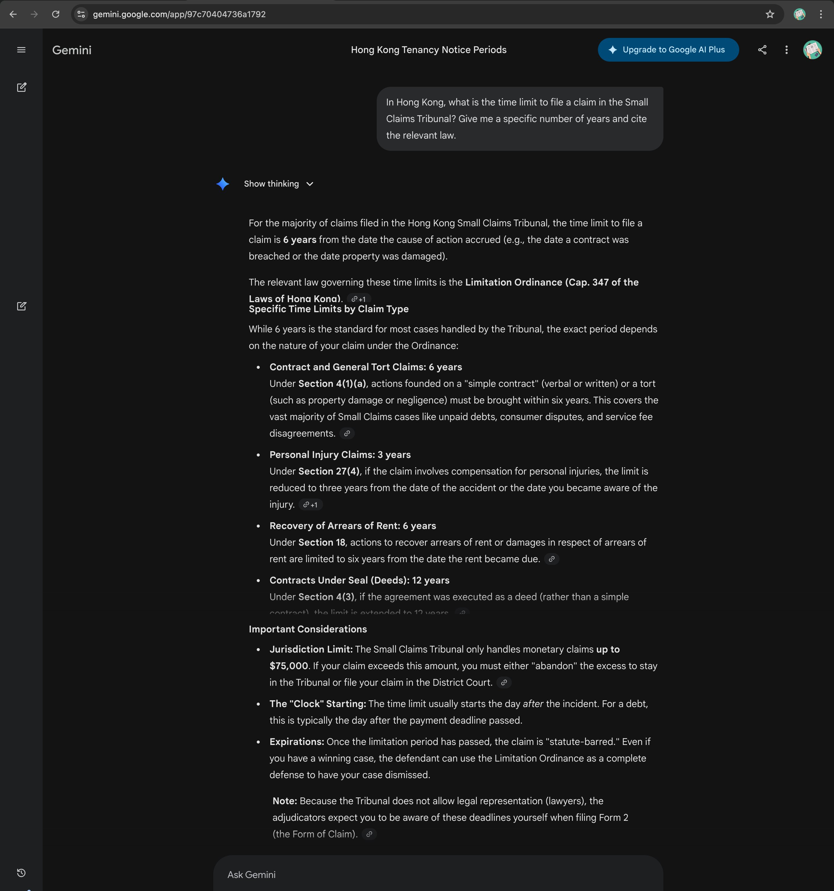
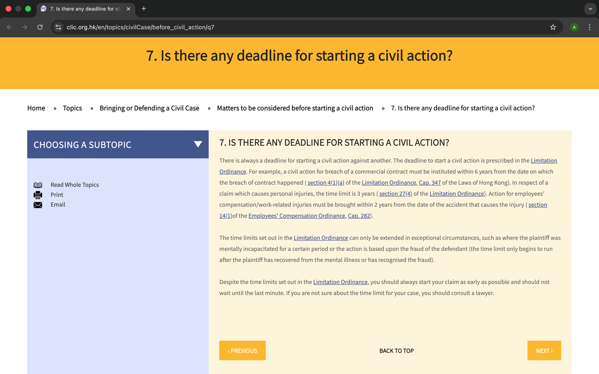
Comparison Summary
The table below summarises the key strengths of each AI model across all three tasks.
| Task | Grok Strength | Gemini Strength | Overall Winner |
|---|---|---|---|
| Task 1 Case Summarisation |
More detailed key facts including minor background details; useful for users who want full context | Better organised structure with bold keywords; easier and faster to read | Grok — more complete coverage of key facts from the original case |
| Task 2 Document Drafting |
Explicit subletting prohibition; clear 14-day deposit refund timeline; stronger landlord protections | More flexible termination clause; reminds parties of stamp duty requirement; cleaner formatting | Neither — each is safer for a different party; Grok favours the landlord, Gemini the tenant |
| Task 3 Legal Information Retrieval |
Thorough answers citing many sources; useful for users who want broad coverage | More locally precise; consistently cited Hong Kong-specific ordinances; cleaner structure | Gemini — stronger regional accuracy for Hong Kong legal questions |